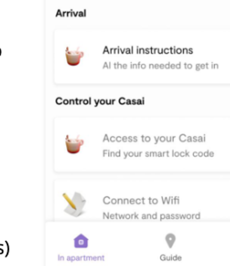
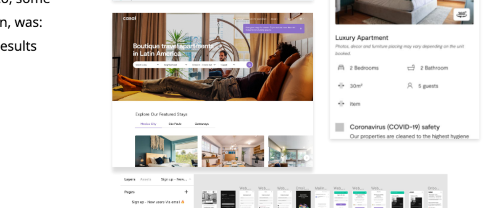
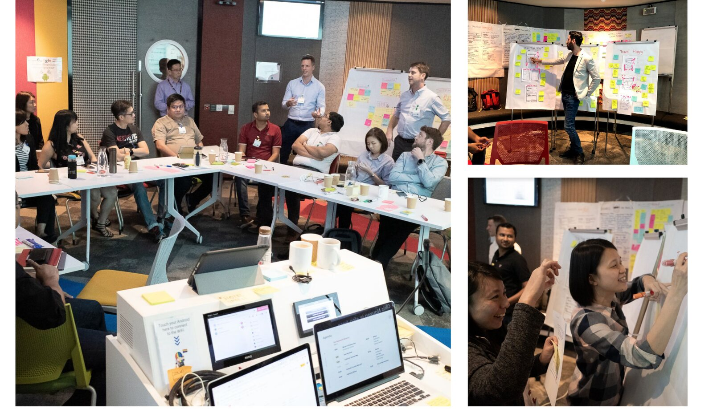
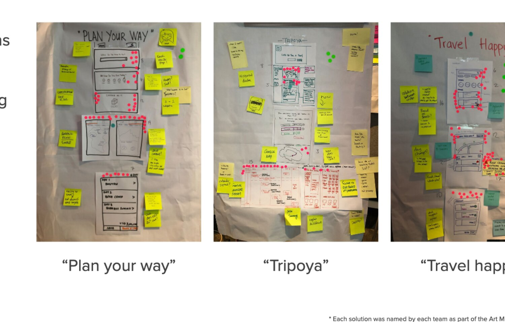

A decade making complex, high-stakes products feel effortless — and building the teams that keep them that way.
I ship the product and build the practice that keeps shipping it — the systems, the hires, and the culture that outlast any one launch.
Selected companies
For a while it looks like overhead. Then it becomes the reason the business scaled — and that’s not a thing you can buy back later.
I turn scattered signals into one aligned direction — research, facilitation, a point of view.
I refine rough into resilient — products people trust under real-world stakes.
I build systems, teams and culture — value that keeps paying out after I leave.
Three products where trust was the whole game — and where I owned the design and the team behind it.
Led consumer design as Bitso made crypto useful — and took it into a new market without losing a shred of trust.
Hired to fix the fundamentals — I left a design system, a concierge app, a research practice, and a team to run it.




Four days. Engineers, commercial, data and C-level. From a divided room to a build-ready MVP — and they owned the decision.
I scale design orgs that run without me — hiring bars, career ladders, governance and rituals that raise the whole team.
In money and identity, trust is the product — legibility, honesty, graceful failure.
Clear POV, pressure-tested by the room. The best decision wins; everyone owns it.
If it only works when I’m in the room, I’ve failed.
Real products in real hands beat perfect decks.
The messiest rooms are where design earns its seat.
Measure success by who I raise.
The product, and the team that keeps earning it.